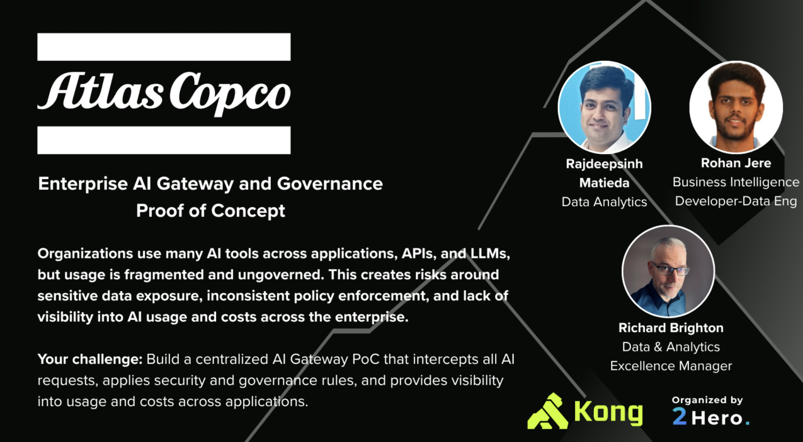

AI chatbots, internal dashboards, customer-facing websites, mobile apps, scheduled jobs. All of them consume the same business APIs. The brief asks for a centralized AI gateway that intercepts every request and gives the enterprise one place to see what is spent, who is sending what, and what gets blocked.

The governance lead is not building AI features. They're the reason the rest of the company can ship them without an incident.
Risk and cost. Different timescales, both invisible until the bill arrives.
Each one is a single query against the audit log. No separate tool, no separate vendor.
The pipeline runs the same way every call. Order matters and the order does not change.
If any of these turn out differently, we revisit scope before we revisit the design.
Each app's LLM client takes a base URL and an API key. We own the perimeter, not the SDK.
One key per app, every key tagged with its team. Attribution is only as good as the mapping.
Regex deny lists cover the high-confidence cases. Semantic detection is out of PoC scope.
Per-1k token pricing is good enough for budget checks. Invoicing is a reconciliation problem.
Kong plus Express costs milliseconds. Millisecond-critical paths sit outside this perimeter.
Single-writer, file-backed. Production swaps in Postgres without touching the pipeline.
Kong consumers and Express API_KEYS must stay in sync. Hardcoded in two places by design, but a rename in one without the other produces silent attribution gaps.
Six prompts, six decisions, six audit rows. Each one ends differently.
| prompt | decision | where_decided |
|---|---|---|
| "What is Atlas Copco?" | allowed | express → small model, logged |
| "My SSN is 123-45-6789" | blocked | kong ai-prompt-guard, never reached express |
| "Email me at john@company.com" | masked | express pii blocker, redacted in place |
| "Sales report for last 6 months" | allowed | express api detector injects context, small model |
| "Analyze quarterly revenue trends" | allowed | smart router → large model, cost tracked |
| 61st request in the same minute | blocked | kong per-consumer rate limit, 429 |
Kong stops what should never reach a backend. Sensitive prompts, oversized payloads, bot traffic, rate floods. Stopping at the edge saves cost and reduces blast radius.
Express owns what only the app knows. Per-team budget, per-app PII policy, model tier, business context, cost calculation. Both layers write to the same audit table.
We built the perimeter the enterprise needs before it can safely ship the next AI feature. Then the one after that.